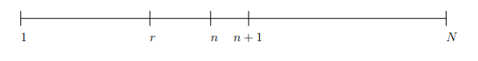
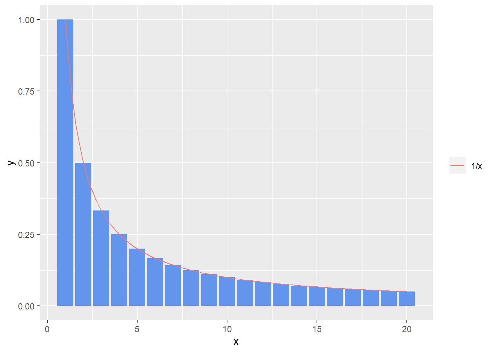
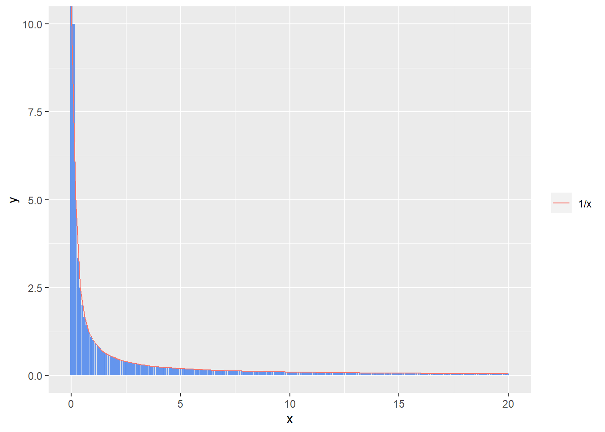
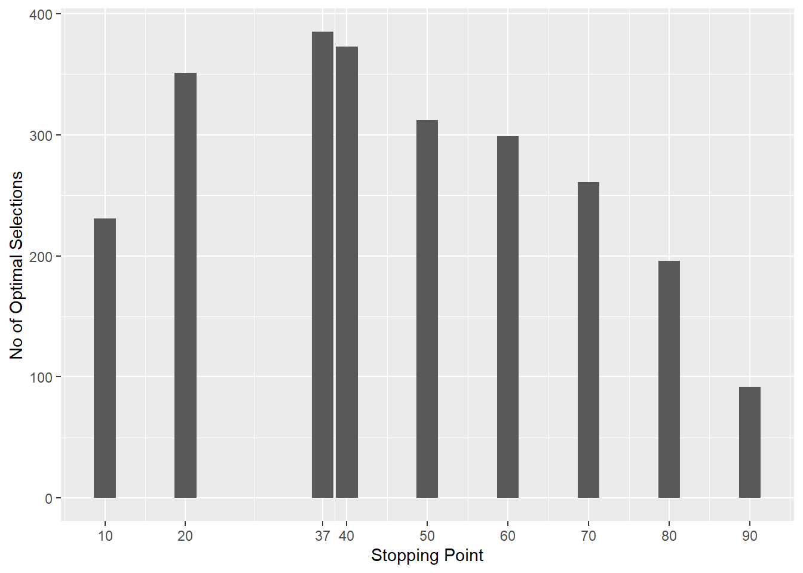

Imagine you are recruiting for an open position at your company. You have the time budget to interview a 100 people. How many people do you interview before deciding on a candidate? If you like the first candidate you interview, do you extend an offer?
Let us say you are a very attractive single on Tinder looking for matches. You have 100 swipes a day that you can use. You are so desirable that you are certain anyone who sees your profile is going to swipe right. You don’t want to disappoint folks you matched with by not responding; so you want to swipe right on only one potential match who you think is perfect for you. How long do you wait before you swipe right?
You are in the market for your dream house. You are looking to close a deal in the next 3 months. You figure that you have enough time to visit 20 houses. How many houses should you visit before submitting a bid?
Let us also make a reasonable assumption that once you have rejected a potential hire, date or home;there is no going back. A rejected candidate goes on to a different job, a rejected match goes on to date someone else and a rejected home is bought by a different bidder.
These are difficult choices to make. Admittedly, I am familiar only with the first one but I guess some of you have experienced all three!
Well, worry not! There exists a mathematically optimal way to make a choice in such circumstances. The problem is generally referred to as the Secretary Problem.
The Solution Strategy
Faced with this problem, most people would choose to review and reject the first $r $ candidates to determine the quality of the candidate pool before settling on one of the subsequent candidates.
To use a concrete example, let us say you are set to interview a 100 candidates, you will speak to the first 20 candidates and rate these candidates on a scale of 1-10. You will reject these 20 candidates.Say the best candidate in the first 20 scored 7 points. Starting with the 21st candidate, if anyone scores above 7, you select that candidate.

Figure 1: Solution Strategy
More generally, you interview \(N\) candidates, \(r\) is the stopping point; i.e. you interview and reject the first r candidates while keeping track of the best candidate \(r^*\). You then meet a new candidate \(i^*\) at position \(n + 1\) such that he or she is better than \(r^*\). You select this candidate.
For a given stopping point \(r\), we can estimate the total probability of selecting the best overall candidate \(i^*\) as a function of \(r\). We can then find the value of \(r\) that maximizes this function \(\mathbb{F}(r)\). This will be the optimal stopping point.
Solution
If we select the candidate at \(n+1\) ( event \(E_1\) ) it is optimal if the following two conditions are fulfilled
- The candidate at \(n+1\) is the best candidate overall; let this be event \(E_2\)
- The best candidate in \(\[1,n\]\) must also be the best candidate in \(\[1,r\]\); let this be event \(E_3\); In other words there should not be a candidate better that \(r^*\) in the interval \((r,n\]\). If such a candidate exists we would select that candidate and not the candidate at \(n + 1\).
\[ \mathbb{P}(E_1) = \mathbb{P}(E_2 \cap E_3) = \mathbb{P}(E_2) \times \mathbb{P}(E_3) \]
Any of the \(N\) candidates could be the best candidate overall, therefore
\(\mathbb{P}(E_2) = \frac{1}{N}\)
Further, Let event \(E_4\) be the event that the best candidate in the interval \(\[1,n\]\) lie in the internal \((r ,n\]\).
\(\mathbb{P}(E_4) = \frac{n-r}{n}\)
The \(\mathbb{P}(E_3)\) is given by the following expression
\(\mathbb{P}(E_3) = 1 - \mathbb{P}(E_4) = \frac{r}{n}\)
This gives:
\[ \mathbb{P}(E_1) = \frac{r}{n} \frac{1}{N} \] Given \(r\) is fixed, \(n\) can be any value in the interval \([r,N-1]\). This is because the best candidate \(i^*\) occupying position \(n + 1\) lies in the interval \(\[r + 1, N \]\)
Summing over all these probabilities gives the function we want to maximize
\[ \mathbb{F}(r) = \frac{r}{r} \frac {1}{N} + \frac{r}{r+1} \frac {1}{N} +..... +\frac{r}{N-1} \frac {1}{N} \]
\[ = \frac{r}{N} ( \frac{1}{r} + \frac{1}{r+1} +.... \frac{1}{N-1}) \]
\[ = \frac{r}{N} \sum\limits_{n=r}^{N-1} \frac{1}{n} \] We can now maximize this function analyticaly or numerically.
Analytical Solution
Let us look at the quantity being summed over. Let us set \(r = 1\) and \(N = 21\)
\[ \sum\limits_{n=1}^{21-1} \frac{1}{n} \]
library(ggplot2)
n <- c(1:20)
f_n <- 1/n
df <- data.frame(x=n,y=f_n)
fun1 <- function(x) 1/x
ggplot(data=df,aes(x=x,y=y))+ geom_bar(stat="identity",fill='cornflowerblue')+ geom_function(fun=fun1,aes(col='1/x'))+
theme(legend.title=element_blank())
Clearly, the sum simply gives the sum of the areas of each rectangular bar. Here each bar has a unit width and there are 20 bars, now let us shrink the width of each bar to 0.1 so that there are 200 bars.
n <- seq(0,20,0.1)
f_n <- 1/n
df <- data.frame(x=n,y=f_n)
ggplot(data=df,aes(x=x,y=y))+ geom_bar(stat="identity",fill='cornflowerblue')+ geom_function(fun=fun1,aes(col='1/x'))+
theme(legend.title=element_blank())
The sum above is simply giving the area under the curve for the function \(f(x) = \frac{1}{x}\) as \(N \rightarrow \inf\). Technically the sum above is the Reimann approximation of the integral over \(\frac{1}{x}\). We can replace the approximation with the actual integral as follows.
\[ \mathbb{F}(r) = \frac{r}{N} \int_r^N \frac{1}{x}dx \]
Solving for this integral is fairly easy.
\[ \int_r^N \frac{1}{x}dx = [ ln\ x] _r^N = ln (\frac{N}{r}) \]
The function to be maximized is now \(\mathbb{F}(r) = \frac{r}{N}ln (\frac{N}{r}) = - \frac{r}{N}ln (\frac{r}{N})\)
Taking the derivative with respect to \(r\) gives
\[ \mathbb{F}'(r) = -1 - ln(\frac{r}{N}) \]
To find the maximum we set this to 0 and solve it.
\[ ln(\frac{r}{N}) = -1 \]
\[ \frac{r}{N} = e^{-1} = 0.367 \] This means out stopping point \(r\) should be set at a value equal to \(0.367 N\).
Numerical Solution
If you do not wish to work through the math, you can also arrive at the same solution numerically.
Remember the function we wish to optimize is given by:
\[ \mathbb{F}(r) = \frac{r}{N} \sum\limits_{n=r}^{N-1} \frac{1}{n} \]
We can code this function as shown below. Let us assume \(N = 100\), or we will be interviewing 10000 candidates.
Fr <- function(r,N=10000){
(r/N)*sum(1/(seq(from=r,to=N-1)))
}We can now pass this function into an optimizer.
optimize(Fr,interval = c(1:10000),maximum=TRUE)## $maximum
## [1] 3695
##
## $objective
## [1] 0.3679074As expected the optimal stopping point is approximately \(10,000 \times \frac{1}{e} = 3,695\). At this point the probability of selecting the optimal candidate is 0.367.
Experiment
We will assume we are interviewing 100 candidates.We will assign a measure of quality to the 100 candidates as shown below
set.seed(999)
q <- runif(100)The best candidate has a quality given by
(best_candidate_quality <- max(q))## [1] 0.9914061This candidate occupies the following position
which(q==best_candidate_quality)## [1] 61Given a list of candidates and their quality measure, the following function returns the best candidate and the value of the best candidate for the given stopping point.
best_candidate <- function(r,q){
#r : stopping point
#q : vector giving quality of candidates
#Step 1: Find the best candidate in the range 1:r (i.e. up to the stopping point)
best_1 <- max(q[1:r])
# Step 2: Find the first candidate after the stopping point who is better than the best candidate before the stopping point
best_2 <- which((q[(r+1):length(q)]>=best_1) == TRUE)
selected_candidate <- ifelse(length(best_2)==0,length(q),r+best_2)
selected_candidate_value <- q[selected_candidate]
return(c(selected_candidate,selected_candidate_value))
}We will run a thousand simulations for various stopping points(10,20,37,40,50,60,70,80 and 90) and tabulate the number of experiments where the optimal candidate was selected.
experiment <- function(r,N){
#N: No of experiments to run
#r: stopping point to be tested
#C : counter to keep track of number of times optimal candidate was selected
C <- 0
for (i in seq_len(N)){
q_new <- sample(q)
if (best_candidate(r,q_new)[2]==best_candidate_quality){
C <- C + 1
}
}
return(C)
}Let us now cary out the experiments
set.seed(1)
stop_points <- c(10,20,37,40,50,60,70,80,90)
(results <- sapply(stop_points,experiment,1000))## [1] 231 351 385 373 312 299 261 196 92df <- data.frame(x=stop_points,y=results)
ggplot(df,aes(x=x,y=y))+ geom_bar(stat='identity')+labs(x='Stopping Point',y='No of Optimal Selections')+
scale_x_continuous(breaks=stop_points,labels=stop_points)
As you can, see when the stopping point is 37, you will pick the optimal candidate the maximum number of times.
Conclusion
So there you have it, you have a way to optimally systematize a decision making process instead of second guessing yourself.It is also a wonderful example of how some simple probability and calculus can be practically very useful.
When faced with making such a choice, reject the first 37% of candidates,then select the first candidate you encounter who is better than the best candidate you have seen so far. If you don’t see a better candidate, pick the last candidate.
References
- https://www.youtube.com/watch?v=XIOoCKO-ybQ&t=335s
- https://rs.io/the-secretary-problem-explained-dating/
- https://www.cantorsparadise.com/math-based-decision-making-the-secretary-problem-a30e301d8489
- https://www.khanacademy.org/math/ap-calculus-ab/ab-integration-new/ab-6-3/a/definite-integral-as-the-limit-of-a-riemann-sum